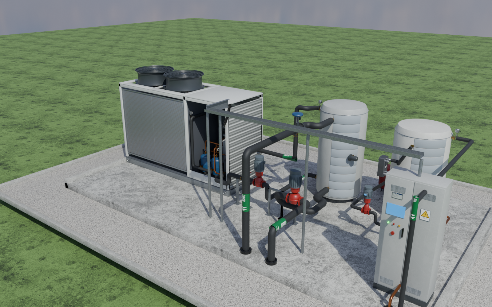

Thermodynamics
Two-stage R290 air-source heat pump
Inverter LP pair + HP scroll with flash economiser serving a 12-flat block: 10 refrigerant state points, frost/defrost, stratified buffer and DHW cylinder, Agile-aware control.
SCOP (H2: compressors + fans)3.26 –
Electricity cost (Agile)6,954 £
Reverse-cycle defrosts1,066
Annual exergy efficiency37.0 %